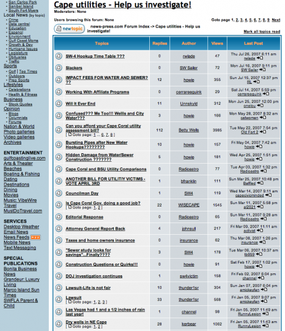

The Onslaught
Meanwhile, Cape Coral residents responded in droves to the paper’s request. Forums filled with hundreds of comments a day. Hayden, Ruane, and Cull, whose contact information Hayden had provided in the original solicitation, were inundated with phone calls and emails. Executive Editor Marymont recalls:
I don’t think we knew, really, what we were getting into until we jumped in and just started. We didn’t anticipate the scope of public interest and involvement... It quickly became clear that we had this onslaught of email and phone calls that we needed to manage. So we had to make quick decisions on the fly about how to put some more firepower on managing it and sifting through all of it.
For example, who would be assigned to comb the forums for tips? Who should manage the day-to-day coverage? Did the story require extra reporters? How much of the growing online response should appear in print, and on what schedule?
Mackenzie Warren, deputy to the publisher for special projects, became the manager of the project. He, Ruane, and Cull began monitoring reader comments. But between the forums and the phones, the workload rapidly became unmanageable. One unexpected obstacle was that the main newsroom’s phones did not have caller identification. “That was a big issue for me,” Cull recalls. “I had to answer every phone call because I was waiting for people to call me back on other issues—officials or what have you—so I couldn’t screen out calls from the guy who just wants to call and talk.” This was especially vexing for him because he felt it important to take calls from readers. “They’re our customers,” he remarks, elaborating:
If we have to sit and listen to them for 20 minutes, maybe that’s all they want. And I’m a firm believer that they just don’t hang up and say, ‘Thanks for listening to me.’ They tell all their friends... ‘I called this guy and he listened to me and said he’d do what he could do.’... That’s good public relations for us. So you hate to let them go, but at the same time, you do have a job to do, so you’ve got to get it done... Email you can ignore until you can get to it, phone calls we couldn’t. So that basically meant that I spent the entire next week on the phone.
Staying abreast of activity on the forums proved no less difficult. “We just didn’t have the time” to read all the comments, Cull explains. He was busy analyzing contracts and requesting public records. Ruane, meanwhile, was knocking on doors in Cape Coral neighborhoods and asking residents how the utility project affected them. He was also covering the City Council’s reaction to the Kessler audit and the political debate the document had sparked.
Aside from the sheer volume of response, Ruane found the forums difficult to navigate. Comments were organized into threads, in which users would respond to the statement that introduced the discussion topic. This meant that the comments were divided into hundreds of separate sections. Ruane recalls the result: “All of a sudden we’ve got... a hundred things to read that we have to try to catch up on.”